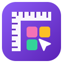

Font Try is now part of Design Inspector
Font Try became the Try fonts tool in Design Inspector, along with the other tools in that set. Design Inspector has the same features, a free version of every tool, and one Pro key for all of them.